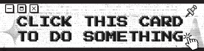

TYNE'S ID CARD

NAME
TYNE
SCHOOL
USTP
BIRTH DATE
06.04.200X
PROGRAM
BSIT
I drift along the gray tides—the conflicting space between muted black and blaring white, where nuance lives and extremes subside.
BACK OF ID